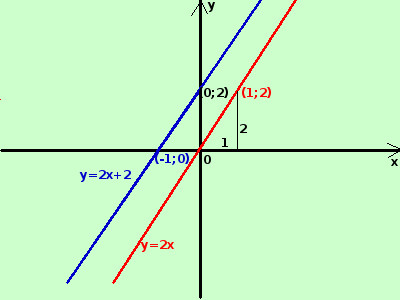

|
sviluppo y = 2x  Curva in rosso E' la funzione retta passante per l'origine degli assi: per ogni incremento in orizzontale ho un incremento doppio in verticale (se x cresce di 1 la y cresce di 2) Passa per l'origine degli assi perche' non ha il termine noto Curva in blu (retta qualunque nel piano) y = 2x + 2 se ho un termine noto positivo la precedente retta per l'origine viene tutta spostata verso l'alto per quel valore (se fosse negativo si sposterebbe verso il basso) nel nostro caso il punto che passava per l'origine ora passa per il punto (0;2) a destra la sua rappresentazione grafica Per rappresentare una retta nel piano basta considerare due suoi punti qualunque che puoi trovare assegnando un valore ad x e calcolare il relativo valore di y esempio, per rappresentare y=2x+2 assegno ad x il valore 0 ottengo y=2·0 + 2 → y = 0 + 2 = 2 il primo punto e' (0;2) assegno ad x il valore -1 ottengo y=2·(-1) + 2 → y = -2 + 2 = 0 il secondo punto e' (-1;0) traccio la retta (blu) passante per quei due punti Naturalmente scelgo sempre i punti piu' semplici da calcolare |